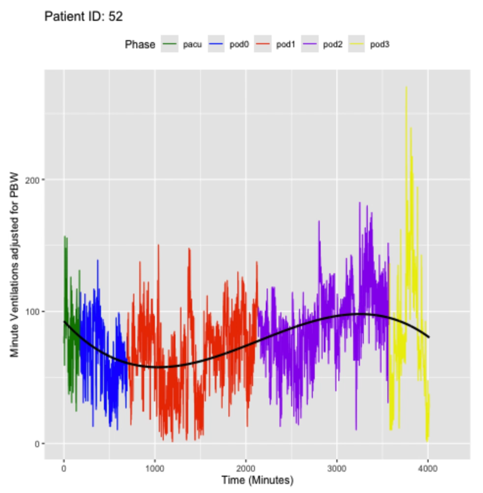

Selected Projects
Comparative Analysis of Protein Prediction Models
Investigated protein-structure prediction model (AlphaFold2, Boltz, and Chai) evaluating their capabilities and applicability to research workflows.
Python
Model Benchmarking
Streamlit UI Design
Comparative Analysis of Protein Prediction Models
- Sought to understand more about the GPU requirements, cost, runtime, and performance of three different commonly used protein prediction models.
- Using python I investigated and evaluated the three prediction models.
- Developed a concurrent model-execution framework in Python and created a user interface in Streamlit for these protein structure predictions.
- Provided a table benchmarking these models against each other in terms of GPU requirements, cost, runtime, and performance to facilitate future decision making.

Prediction of Failure after Kidney Transplantation Surgery
Developed predictive models for post-transplant failure using clinical data.
Advanced Predictive Regression
Time-series Analysis
Data Visualizations
Prediction of Failure after Kidney Transplantation Surgery
- Developed predictive models for post-transplant failure using clinical data, comparing logistic regression, segmented regression, stepwise regression, and K-nearest neighbors by AUC.
- Modeled minute-by-minute ventilation data using segmented regressions and spline models to characterize respiratory trends across patients.
- Presented this research a biostatistics conference August 2024 and at an undergraduate mathematics conference February 2025.
Prediction of House Sale Prices using Advanced Regression Techniques
Performed feature preprocessing, model comparison, and hyperparameter optimization across linear, regularized, kernel-based, tree-based, and boosting methods.
Python
XGBoost
Machine Learning
Prediction of House Sale Prices using Advanced Regression Techniques
- Performed feature preprocessing, model comparison, and hyperparameter optimization across linear, regularized, kernel-based, tree-based, and boosting methods.
- Developed an ensemble regression pipeline combining support vector regression and gradient-boosted trees to improve test accuracy.
- Scored in approximately the top 7% of the Kaggle House Price Competition using this method.